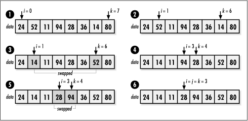
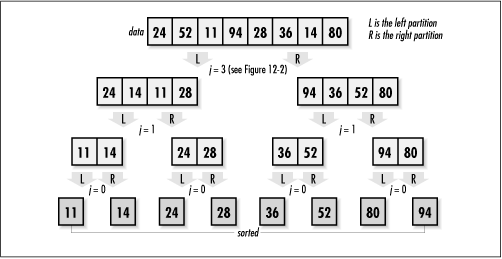

12.6 Implementation and Analysis of
Quicksort
Quicksort works
fundamentally by recursively partitioning an unsorted set of
elements until all partitions contain a single element. In the
implementation presented here, data initially
contains the unsorted set of size elements
stored in a single block of contiguous storage. Quicksort
sorts in place, so all partitioning is performed in
data as well. When qksort returns, data
is completely sorted.
As we have seen, an important part of
quicksort is how we partition the data. This task is performed
in the function partition (see
Example
12.2) . This function partitions the elements
between positions i and k in
data, where i is less than
k.
We begin by selecting a partition value using
the median-of-three method mentioned earlier. Once the
partition value has been selected, we move from
k to the left in data until we
find an element that is less than or equal to it. This element
belongs in the left partition. Next, we move from
i to the right until we find an element that
is greater than or equal to the partition value. This element
belongs in the right partition. Once two elements are found in
the wrong partition, they are swapped. We continue in this way
until i and k cross. (You may
want to consider how we know that if any one element is in the
wrong partition, there is always one that can be swapped with
it.) Once i and k cross, all
elements to the left of the partition value are less than or
equal to it, and all elements to the right are greater (see Figure
12.2).

Now we look at how the recursion proceeds in
qksort (see Example
12.2). On the initial call to qksort, i is set to
and k is set to size - 1. We
begin by calling partition to
partition data between positions
i and k. When partition returns, j
is assigned the position of the element that defines where the
elements between i and k are
partitioned. Next, we call qksort recursively for the left
partition, which is from position i to
j. Sorting left partitions continues
recursively until an activation of qksort is passed a partition
containing a single element. In this activation,
i will not be less than k, so
the call terminates. In the previous activation of qksort, this causes an iteration to
the right partition, from position j + 1 to
k. Overall, we continue in this way until the
first activation of qksort
terminates, at which point the data is completely sorted (see
Figure
12.3).
The analysis of quicksort centers around its
average-case performance, which is widely accepted as its
metric. Even though the worst case of quicksort is no better
than that of insertion sort, O
(n2), quicksort
reliably performs much closer to its average-case running
time, O (n lg n), where n is the number of elements being
sorted.

Determining the runtime complexity for the
average case of quicksort depends on the assumption that there
will be an even distribution of balanced and unbalanced
partitions. This assumption is reasonable if the
median-of-three method for partitioning is used. In this case,
as we repeatedly partition the array, it is helpful to picture
the tree shown in Figure
12.3, which has a height of (lg n) + 1. Since for the top lg n levels of the tree, we must
traverse all n elements in
order to form the partitions of the next level, quicksort runs
in time O (n lg n). Quicksort sorts in place, so its
space requirement is only that occupied by the data to be
sorted.
Example 12.2.
Implementation of Quicksort /*****************************************************************************
* *
* ------------------------------- qksort.c ------------------------------- *
* *
*****************************************************************************/
#include <stdlib.h>
#include <string.h>
#include "sort.h"
/*****************************************************************************
* *
* ------------------------------ compare_int ----------------------------- *
* *
*****************************************************************************/
static int compare_int(const void *int1, const void *int2) {
/*****************************************************************************
* *
* Compare two integers (used during median-of-three partitioning). *
* *
*****************************************************************************/
if (*(const int *)int1 > *(const int *)int2)
return 1;
else if (*(const int *)int1 < *(const int *)int2)
return -1;
else
return 0;
}
/*****************************************************************************
* *
* ------------------------------- partition ------------------------------ *
* *
*****************************************************************************/
static int partition(void *data, int esize, int i, int k, int (*compare)
(const void *key1, const void *key2)) {
char *a = data;
void *pval,
*temp;
int r[3];
/*****************************************************************************
* *
* Allocate storage for the partition value and swapping. *
* *
*****************************************************************************/
if ((pval = malloc(esize)) == NULL)
return -1;
if ((temp = malloc(esize)) == NULL) {
free(pval);
return -1;
}
/*****************************************************************************
* *
* Use the median-of-three method to find the partition value. *
* *
*****************************************************************************/
r[0] = (rand() % (k - i + 1)) + i;
r[1] = (rand() % (k - i + 1)) + i;
r[2] = (rand() % (k - i + 1)) + i;
issort(r, 3, sizeof(int), compare_int);
memcpy(pval, &a[r[1] * esize], esize);
/*****************************************************************************
* *
* Create two partitions around the partition value. *
* *
*****************************************************************************/
i--;
k++;
while (1) {
/**************************************************************************
* *
* Move left until an element is found in the wrong partition. *
* *
**************************************************************************/
do {
k--;
} while (compare(&a[k * esize], pval) > 0);
/**************************************************************************
* *
* Move right until an element is found in the wrong partition. *
* *
**************************************************************************/
do {
i++;
} while (compare(&a[i * esize], pval) < 0);
if (i >= k) {
/***********************************************************************
* *
* Stop partitioning when the left and right counters cross. *
* *
***********************************************************************/
break;
}
else {
/***********************************************************************
* *
* Swap the elements now under the left and right counters. *
* *
***********************************************************************/
memcpy(temp, &a[i * esize], esize);
memcpy(&a[i * esize], &a[k * esize], esize);
memcpy(&a[k * esize], temp, esize);
}
}
/*****************************************************************************
* *
* Free the storage allocated for partitioning. *
* *
*****************************************************************************/
free(pval);
free(temp);
/*****************************************************************************
* *
* Return the position dividing the two partitions. *
* *
*****************************************************************************/
return k;
}
/*****************************************************************************
* *
* -------------------------------- qksort -------------------------------- *
* *
*****************************************************************************/
int qksort(void *data, int size, int esize, int i, int k, int (*compare)
(const void *key1, const void *key2)) {
int j;
/*****************************************************************************
* *
* Stop the recursion when it is not possible to partition further. *
* *
*****************************************************************************/
while (i < k) {
/**************************************************************************
* *
* Determine where to partition the elements. *
* *
**************************************************************************/
if ((j = partition(data, esize, i, k, compare)) < 0)
return -1;
/**************************************************************************
* *
* Recursively sort the left partition. *
* *
**************************************************************************/
if (qksort(data, size, esize, i, j, compare) < 0)
return -1;
/**************************************************************************
* *
* Iterate and sort the right partition. *
* *
**************************************************************************/
i = j + 1;
}
return 0;
} |